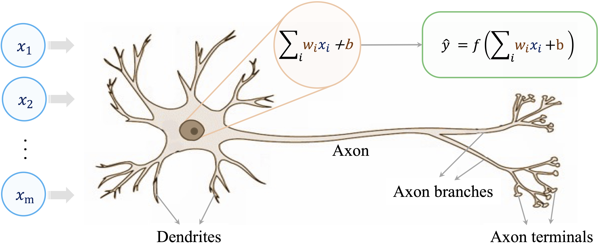
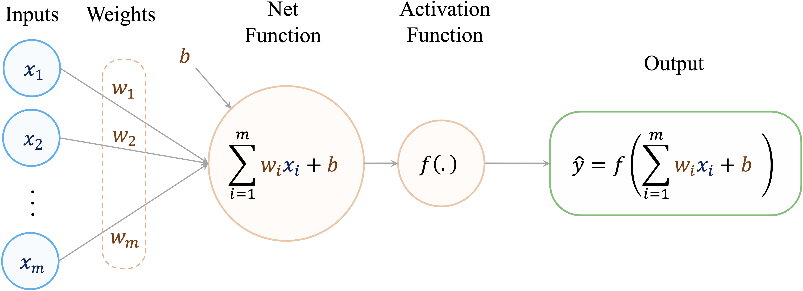
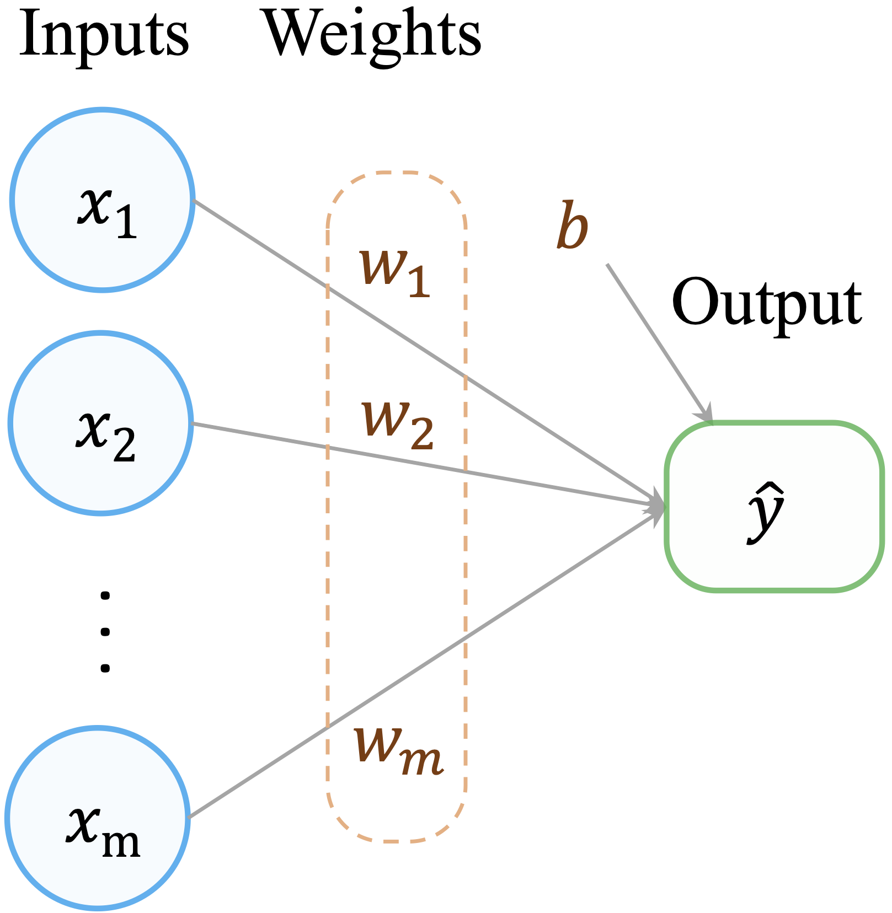
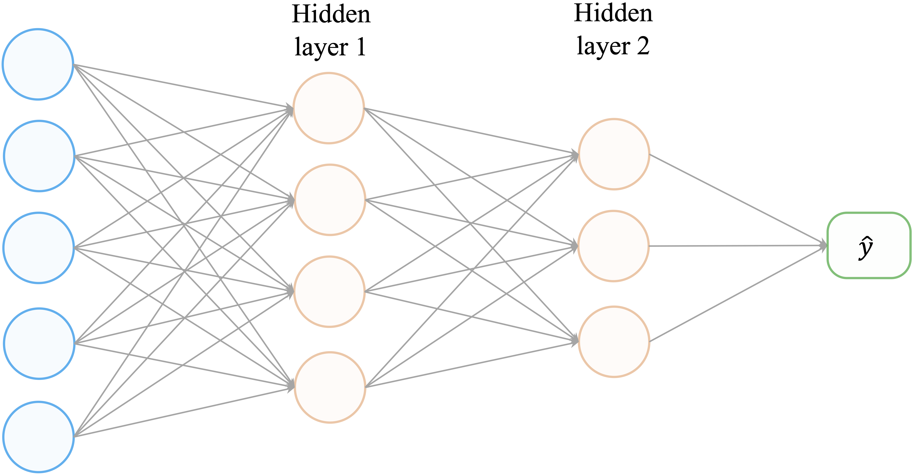
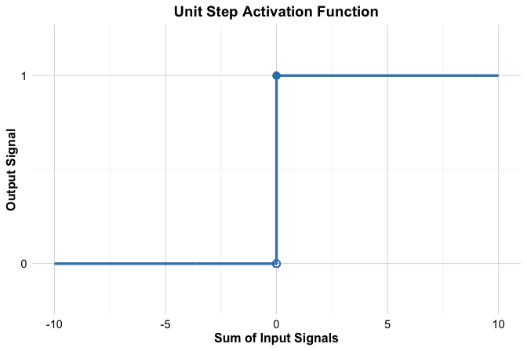
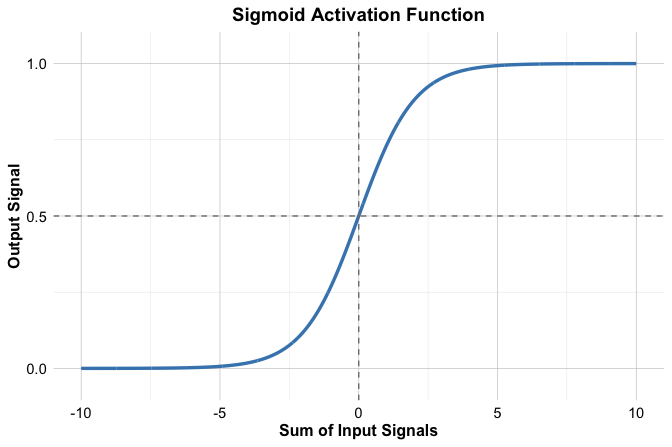
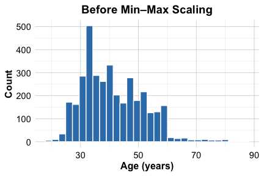
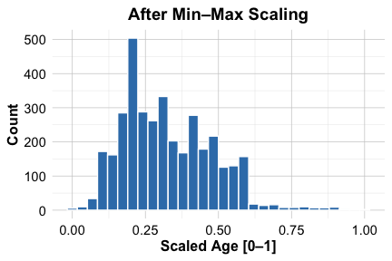

12 Neural Networks: Foundations of Artificial Intelligence
The brain is wider than the sky.
Can machines learn from data in ways that resemble human perception and decision-making? This question motivates artificial intelligence (AI), a field that has moved from early conceptual ideas to practical systems used in recommendation engines, fraud detection, autonomous driving, and generative AI applications.
Many recent advances in AI have been enabled by increases in computing power, the availability of large-scale data, and progress in machine learning algorithms. A central modeling tool behind these developments is the neural network, which forms the foundation of modern deep learning.
Neural networks are computational models inspired by biological information processing. They consist of layers of interconnected units that transform input features into predictions by learning weights from data. This architecture is particularly useful when relationships between variables are highly nonlinear, or when the data are high-dimensional and unstructured (for example, images, speech, or text). Unlike many classical approaches that rely on manually engineered features, neural networks can learn intermediate representations directly from the training data.
This chapter focuses on feed-forward neural networks, also called multilayer perceptrons (MLPs). These models provide a clear entry point to neural network methodology and introduce the key components used in more advanced architectures.
We continue our progression through the Data Science Workflow introduced in Chapter 2. Earlier chapters covered data preparation and exploration, supervised learning methods for classification and regression (Chapters 7, 9, and 10), tree-based models (Chapter 11), and model evaluation (Chapter 8). Neural networks now provide an additional supervised learning approach that can be used for both classification and regression, particularly when simpler models struggle to capture complex structure in the data.
Why Neural Networks Are Powerful
Neural networks have become central to many modern machine learning applications because they can model relationships that are difficult to capture with simpler approaches. Their effectiveness does not arise from a single feature, but from a combination of architectural and algorithmic properties that enable flexible learning from data.
First, neural networks are well suited for learning complex patterns, particularly in high-dimensional or unstructured data. By stacking multiple layers of transformations, they can represent interactions and nonlinear relationships that are inaccessible to linear models or simple rule-based systems. This makes them effective in tasks such as image recognition, speech processing, and text analysis.
Second, neural networks can be robust to noise and variability in the data. During training, weights are adjusted to minimize overall prediction error rather than fit individual observations exactly. As a result, well-trained networks often generalize effectively, even when inputs are imperfect or partially corrupted.
Third, neural networks are highly flexible in their capacity. By adjusting the number of layers and neurons, the same modeling framework can be adapted to problems of varying complexity. This scalability allows practitioners to tailor model capacity to the structure of the data, ranging from small tabular datasets to large-scale applications.
These advantages come with important trade-offs. Neural networks typically offer limited interpretability compared with models such as decision trees or linear regression, since their predictions depend on many interacting parameters. In addition, training neural networks can be computationally demanding, especially for large datasets or deep architectures.
Despite these limitations, neural networks provide a powerful and general modeling framework. Their ability to approximate complex functions through layered nonlinear transformations explains both their strengths and their challenges. In the following sections, we examine how this power arises in practice by exploring network structure, activation functions, and learning algorithms in more detail.
What This Chapter Covers
This chapter introduces neural networks as a flexible class of supervised learning models and explains how they can be applied in practice using R. The emphasis is on developing a clear conceptual understanding of how neural networks operate, alongside hands-on experience with a real-world dataset.
By the end of this chapter, you will understand the basic structure of neural networks, how they learn from data, and how to train and evaluate a feed-forward neural network for classification tasks. The chapter covers the following topics:
Biological motivation for neural networks and the abstraction of key ideas from human information processing.
Network architecture and mechanics, including layers, neurons, weights, and bias terms.
Activation functions and their role in introducing nonlinearity and shaping model behavior.
Learning algorithms, with an emphasis on gradient-based optimization and backpropagation.
An applied case study using the bank marketing dataset to demonstrate model training, prediction, and evaluation within the Data Science Workflow.
The chapter begins by examining the biological inspiration behind neural networks and then progresses from theoretical foundations to practical implementation. This structure is intended to clarify both how neural networks work and how they can be used responsibly as part of a broader data science analysis.
12.1 The Biological Inspiration Behind Neural Networks
How can a machine learn to recognize objects, interpret speech, or make recommendations without being explicitly programmed with decision rules? Neural networks address this question by drawing inspiration from biological information processing, particularly from the structure of the human brain.
Biological neurons are the fundamental units of the nervous system. Individually, each neuron performs a simple operation: it receives signals from other neurons, integrates them, and transmits an output signal if a certain activation threshold is reached. Learning and cognition emerge not from individual neurons, but from the collective behavior of large networks of interconnected cells. The human brain contains on the order of \(10^{11}\) neurons, each connected to many others through synapses, forming an extremely rich network for information processing.
Artificial neural networks (ANNs) are simplified computational models that abstract a small number of key ideas from this biological system. They do not attempt to replicate the full complexity of the brain. Instead, they capture the notions of distributed computation, weighted connections, and nonlinear signal transformation. These abstractions allow neural networks to learn complex relationships from data while remaining mathematically and computationally tractable.
As illustrated in Figure 12.1, a biological neuron receives input signals through dendrites, aggregates them in the cell body, and transmits an output signal through the axon when activation exceeds a threshold. This basic mechanism motivates the design of the artificial neuron shown in Figure 12.2. An artificial neuron receives input features (\(x_i\)), multiplies them by adjustable weights (\(w_i\)), and computes a weighted sum. A bias term is added, and the result is passed through an activation function \(f(\cdot)\) to produce an output (\(\hat{y}\)).

The activation function plays a crucial role by introducing nonlinearity. Without this nonlinear transformation, even large networks would reduce to linear models and would be unable to represent complex patterns. By combining many such artificial neurons into layered architectures, neural networks can approximate a wide range of functions.
This biologically inspired abstraction provides the conceptual foundation for neural networks. In the next sections, we move from this intuition to a more formal description of network structure, activation functions, and learning algorithms, which together explain how neural networks are constructed and trained in practice.
12.2 How Neural Networks Work
Neural networks build directly on the ideas introduced in linear regression, extending them to allow much richer representations of the relationship between predictors and outcomes. In Chapter 10, we saw that a linear regression model predicts an outcome as a weighted sum of input features: \[ \hat{y} = b_0 + b_1 x_1 + b_2 x_2 + \dots + b_m x_m, \] where \(m\) denotes the number of predictors, \(b_0\) is the intercept, and \(b_1, \dots, b_m\) are regression coefficients. This formulation can be viewed as a simple computational network in which input features are connected directly to an output through weighted connections, as illustrated in Figure 12.3.

This representation highlights both the strength and the limitation of linear models. While they are interpretable and efficient, they assume that predictors contribute independently and linearly to the outcome. As a result, linear regression cannot naturally capture complex interactions or hierarchical structure in the data.
Neural networks generalize this idea by inserting one or more layers of artificial neurons between the input and output. Each layer applies a transformation to its inputs, allowing the model to represent nonlinear and interactive effects. A typical multilayer network is shown in Figure 12.4.

A feed-forward neural network consists of three types of layers:
The input layer, which receives the predictor variables.
One or more hidden layers, which transform the inputs through weighted connections and nonlinear activation functions.
The output layer, which produces the final prediction, either as a continuous value (regression) or as class probabilities (classification).
Information flows forward through the network from the input layer to the output layer. Each connection is associated with a weight, and these weights are learned from data during training.
The computation performed by a single artificial neuron can be written as \[ \hat{y} = f\left( \sum_{i=1}^{m} w_i x_i + b \right), \] where \(x_i\) are the input features, \(w_i\) are the corresponding weights, \(b\) is a bias term, and \(f(\cdot)\) is an activation function.
The activation function is essential. Without it, stacking multiple layers would still result in a linear transformation, regardless of network depth. By introducing nonlinearity at each layer, neural networks gain the expressive power needed to approximate complex functions and model intricate patterns in real-world data.
Together, these elements explain why neural networks are able to represent complex relationships in data. Despite the wide variety of network designs, three characteristics are fundamental to how neural networks operate.
Nonlinearity through activation functions.
Each neuron applies a nonlinear transformation to its input before passing the result to the next layer. This nonlinearity allows neural networks to represent relationships that cannot be captured by linear models.Capacity determined by network architecture.
The number of layers and the number of neurons within each layer define the expressive capacity of a neural network. Increasing architectural complexity allows the model to capture more intricate patterns, but also increases the risk of overfitting and computational cost.Learning through optimization.
Neural networks learn by adjusting weights and bias terms to minimize a loss function, typically using gradient-based optimization methods.
In the following sections, we examine these components in more detail, beginning with activation functions and their role in enabling nonlinear modeling.
12.3 Activation Functions
Activation functions are a central component of neural networks. They determine how the weighted input to a neuron is transformed before being passed to the next layer, and they are responsible for introducing nonlinearity into the model.
Without activation functions, a neural network, regardless of its depth, would reduce to a linear transformation of the input features. In such a case, stacking multiple layers would not increase the model’s expressive power. By applying a nonlinear transformation at each neuron, activation functions allow neural networks to represent interactions, nonlinear relationships, and hierarchical structures in data.
Mathematically, an artificial neuron computes a weighted sum of its inputs and applies an activation function \(f(\cdot)\) to produce an output: \[ \hat{y} = f\left( \sum_{i=1}^{m} w_i x_i + b \right), \] where \(x_i\) are the input features, \(w_i\) are the corresponding weights, \(b\) is a bias term, and \(f(\cdot)\) is the activation function. The choice of \(f(\cdot)\) affects how signals propagate through the network and how efficiently the model can be trained.
Different activation functions exhibit different mathematical properties, such as smoothness, saturation, and gradient behavior. These properties influence both the learning dynamics of the network and its ability to generalize to new data. In the following subsections, we examine several commonly used activation functions and discuss their roles in modern neural network architectures.
The Threshold Activation Function
One of the earliest activation functions is the threshold function, which was inspired by the all-or-nothing firing behavior of biological neurons. The function produces a binary output, taking the value 1 when the input exceeds a threshold and 0 otherwise: \[ f(x) = \begin{cases} 1 & \text{if } x \geq 0, \\ 0 & \text{if } x < 0. \end{cases} \] This step-like behavior is illustrated in Figure 12.5. The threshold function played an important historical role in early neural models, such as the perceptron. However, it is not used in modern neural networks.

A key limitation of the threshold function is that it is not differentiable. As a result, it cannot be used with gradient-based learning algorithms, including backpropagation, which rely on computing derivatives to update model parameters. In addition, the binary output restricts the model’s ability to represent gradual changes in activation, limiting its expressive power.
For these reasons, contemporary neural networks rely on smooth, differentiable activation functions that retain the idea of nonlinear transformation while supporting efficient optimization. We examine these alternatives next.
The Sigmoid Activation Function
The sigmoid activation function, also known as the logistic function, is a smooth alternative to the threshold function. It maps any real-valued input to the interval \((0, 1)\), which makes it particularly suitable for modeling probabilities in binary classification problems. The function is defined as \[ f(x) = \frac{1}{1 + e^{-x}}, \] where \(e\) denotes the base of the natural logarithm. The resulting S-shaped curve, shown in Figure 12.6, is continuous and differentiable, allowing it to be used in gradient-based learning algorithms.

The sigmoid function plays a central role in logistic regression (Section 10.6). In that setting, the log-odds of a binary outcome are modeled as a linear combination of predictors, \[ \hat{y} = b_0 + b_1 x_1 + \dots + b_m x_m, \] and transformed into a probability using the sigmoid function, \[ p = \frac{1}{1 + e^{-\hat{y}}}. \]
From this perspective, logistic regression can be viewed as a neural network with a single output neuron and a sigmoid activation function. When combined with a cross-entropy loss function, this formulation provides a natural probabilistic interpretation and leads to efficient optimization.
Despite these advantages, the sigmoid function has important limitations. For large positive or negative inputs, the function saturates, causing gradients to become very small. This vanishing gradient effect can significantly slow learning in deep networks. For this reason, sigmoid activation is typically used in output layers for binary classification, while alternative activation functions are preferred in hidden layers.
Common Activation Functions in Deep Networks
While the sigmoid function played a central role in early neural networks, modern architectures typically rely on activation functions that provide more favorable gradient behavior and faster convergence during training. Several alternatives are now commonly used, particularly in hidden layers.
Hyperbolic tangent (tanh).
The tanh function maps inputs to the interval \((-1, 1)\) and is zero-centered. Compared with the sigmoid function, this centering can lead to more stable and efficient optimization in hidden layers.Rectified Linear Unit (ReLU).
Defined as \(f(x) = \max(0, x)\), ReLU is computationally simple and maintains a constant gradient for positive inputs. These properties help alleviate the vanishing gradient problem and make ReLU the default choice in many deep network architectures.Leaky ReLU.
Leaky ReLU modifies the ReLU function by allowing a small, nonzero gradient when \(x < 0\). This reduces the risk of inactive (“dead”) neurons that can arise in standard ReLU networks.
Figure Figure 12.7 compares the output shapes of the sigmoid, tanh, and ReLU activation functions across a range of input values.

The choice of activation function influences both learning dynamics and model performance, and no single function is optimal in all settings. In the next subsection, we discuss practical considerations for selecting an activation function based on the task, network architecture, and modeling goals.
Choosing the Right Activation Function
Selecting an appropriate activation function is an important modeling decision, as it influences both learning dynamics and predictive performance. The choice depends primarily on the learning task and on the role of the layer within the network.
For output layers, the activation function is usually determined by the type of problem. In binary classification, the sigmoid function is commonly used because it produces values in the interval \((0, 1)\) that can be interpreted as probabilities. For regression tasks with continuous outcomes, a linear activation function is typically employed to allow unrestricted output values.
For hidden layers, the choice is less rigid and often guided by practical considerations. Functions such as tanh can be useful when zero-centered activations improve optimization, but in modern neural networks ReLU and its variants are most commonly used. Their simple form and favorable gradient behavior often lead to faster convergence and more stable training. When standard ReLU units become inactive, variants such as Leaky ReLU provide a practical alternative.
Although general guidelines exist, no activation function is universally optimal. Performance can depend on the data distribution, network depth, and optimization settings. In practice, activation functions are often selected empirically and evaluated as part of the modeling process.
With activation functions in place, we now turn to the architecture of neural networks and examine how layers, neurons, and connections are organized to control model capacity and learning behavior.
12.4 Network Architecture
The performance and flexibility of a neural network depend not only on how it is trained, but also on how it is structured. This structure, known as the network’s architecture, determines how information flows through the model and how complex the learned relationships can be.
A neural network’s architecture is defined by the arrangement of neurons and the connections between them. Three aspects are particularly important: the number of layers, the number of neurons within each layer, and the pattern of connectivity between layers. Together, these choices determine the model’s capacity to represent patterns in the data.
To illustrate the role of architecture, consider the simple network shown earlier in Figure 12.3. This model consists of input nodes connected directly to output nodes through weighted connections. Such a single-layer architecture is sufficient for linear regression and basic classification tasks, but it cannot capture nonlinear relationships or interactions among features.
Neural networks overcome this limitation by introducing one or more hidden layers, as illustrated in Figure 12.4. Hidden layers apply successive transformations to the data, allowing the model to learn intermediate representations and increasingly abstract features. A typical feed-forward neural network therefore consists of an input layer, one or more hidden layers, and an output layer.
In fully connected networks, each neuron in a layer is connected to every neuron in the subsequent layer. These connections are associated with weights that are learned from data during training. By stacking multiple layers, the network can represent complex nonlinear functions through a sequence of simpler transformations.
The number of neurons in each layer plays a crucial role. The number of input nodes is fixed by the number of predictors, and the number of output nodes is determined by the task (for example, one node for regression or one node per class in multi-class classification). In contrast, the number of hidden neurons is a modeling choice. Increasing this number raises the expressive capacity of the network, but also increases the risk of overfitting and computational cost.
Choosing an appropriate architecture therefore involves balancing model complexity and generalization. Simple architectures may underfit complex data, while overly large networks may fit noise rather than structure. Principles such as Occam’s Razor provide useful guidance, but in practice architecture selection is often guided by experimentation, cross-validation, and regularization techniques such as weight decay or dropout.
This section has focused on fully connected feed-forward networks, which form the foundation of many neural network models. Other architectures, such as convolutional neural networks for image data and recurrent neural networks for sequential data, build on the same principles but introduce specialized connectivity patterns tailored to specific data structures.
Within the Data Science Workflow, architecture selection is part of the modeling stage. Choosing an appropriate network structure establishes the capacity of the model and sets the conditions under which learning can proceed effectively.
12.5 How Neural Networks Learn
How does a neural network improve its predictions over time? At the start of training, a neural network has no knowledge of the underlying patterns in the data. Learning occurs by gradually adjusting the strengths of the connections between neurons, represented by weights, in response to observed prediction errors.
Training a neural network involves repeatedly updating these weights in a computational process that enables the model to extract structure from data. Although early ideas date back to the mid-twentieth century, the introduction of the backpropagation algorithm in the 1980s made it feasible to train multilayer networks efficiently. Backpropagation remains the foundation of most modern neural network training procedures.
The learning process proceeds iteratively over multiple passes through the training data, known as epochs, and consists of two tightly coupled phases: a forward pass and a backward pass.
During the forward pass, input data flow through the network layer by layer. Each neuron computes a weighted sum of its inputs, applies an activation function, and passes the result to the next layer. The network produces an output, which is then compared with the observed target value to quantify the prediction error using a loss function.
In the backward pass, this error is propagated backward through the network using the chain rule of calculus. The objective is to determine how each weight contributes to the overall error. Gradient-based optimization methods use this information to update the weights in directions that reduce future prediction error.
The magnitude of these updates is controlled by the learning rate. Large learning rates can accelerate training but risk overshooting optimal solutions, while small learning rates lead to more stable but slower convergence. In practice, adaptive optimization methods adjust learning rates automatically to balance these trade-offs.
A key requirement for this learning process is differentiability. Activation functions such as sigmoid, tanh, and ReLU allow gradients to be computed efficiently, enabling the use of gradient-based optimization algorithms. Variants of gradient descent, including stochastic gradient descent and adaptive methods, further improve training efficiency, particularly for large datasets.
By repeating forward and backward passes over many epochs, the network progressively reduces prediction error and improves its ability to generalize to unseen data. Advances in optimization algorithms and computing hardware, including GPU and TPU acceleration, have made it possible to train deep and highly expressive networks that now underpin many modern AI systems.
With this learning mechanism in place, we now turn to a practical case study that demonstrates how neural networks can be trained and evaluated on real-world data using R.
12.6 Case Study: Predicting Term Deposit Subscriptions
This case study examines how neural networks can be used to support data-driven marketing decisions in the financial sector. Using data from a previous telemarketing campaign, we build a classification model to predict whether a customer will subscribe to a term deposit. The objective is to identify patterns in customer characteristics and campaign interactions that can inform more targeted and efficient outreach strategies.
The dataset originates from the UC Irvine Machine Learning Repository and is distributed with the liver package. It was introduced by Moro, Cortez, and Rita (2014) in the context of analyzing and improving bank marketing campaigns. The response variable indicates whether a customer subscribed to a term deposit, while the predictors capture a combination of demographic attributes and campaign-related information. This mix of features makes the dataset well suited for illustrating the flexibility of neural networks in supervised classification settings.
Following the Data Science Workflow introduced in Chapter 2 and illustrated in Figure 2.3, the case study proceeds systematically from problem formulation to model training and evaluation. Each step is explicitly connected to the workflow to emphasize good practice, reproducibility, and the role of neural networks within a broader modeling framework implemented in R.
Problem Understanding
Financial institutions regularly face the challenge of deciding which customers to target in marketing campaigns. The central objective is to identify individuals who are likely to respond positively, thereby allocating resources efficiently while avoiding unnecessary or intrusive contact.
In practice, marketing strategies range from broad mass campaigns to more targeted, data-driven approaches. Mass campaigns are simple to deploy but typically yield very low response rates. Directed marketing, in contrast, relies on predictive models to identify customers with a higher likelihood of interest, improving conversion rates but also introducing concerns related to privacy, fairness, and customer trust.
This case study focuses on directed marketing in the context of term deposit subscriptions. A term deposit is a fixed-term savings product that offers higher interest rates than standard savings accounts, providing financial institutions with stable funding while offering customers predictable returns. Using data from previous campaigns, we aim to model the probability that a customer will subscribe to such a product.
From a modeling perspective, the task is a binary classification problem: predicting whether a customer will subscribe or not based on demographic characteristics and campaign-related features. Accurate predictions can support more selective targeting, reducing marketing costs and limiting outreach to customers who are unlikely to respond, while highlighting the importance of balancing predictive performance with responsible use of customer data.
Overview of the Dataset
The bank dataset contains information from direct phone-based marketing campaigns conducted by a financial institution. Each observation corresponds to a customer who was contacted during a campaign, and the objective is to predict whether the customer subscribed to a term deposit (deposit = "yes" or "no"). The dataset combines demographic characteristics with information about prior contacts and campaign interactions, making it suitable for supervised classification using neural networks.
We begin by loading the dataset into R and inspecting its structure to understand the types of variables available for modeling:
library(liver)
data(bank)
str(bank)
'data.frame': 4521 obs. of 17 variables:
$ age : int 30 33 35 30 59 35 36 39 41 43 ...
$ job : Factor w/ 12 levels "admin.","blue-collar",..: 11 8 5 5 2 5 7 10 3 8 ...
$ marital : Factor w/ 3 levels "divorced","married",..: 2 2 3 2 2 3 2 2 2 2 ...
$ education: Factor w/ 4 levels "primary","secondary",..: 1 2 3 3 2 3 3 2 3 1 ...
$ default : Factor w/ 2 levels "no","yes": 1 1 1 1 1 1 1 1 1 1 ...
$ balance : int 1787 4789 1350 1476 0 747 307 147 221 -88 ...
$ housing : Factor w/ 2 levels "no","yes": 1 2 2 2 2 1 2 2 2 2 ...
$ loan : Factor w/ 2 levels "no","yes": 1 2 1 2 1 1 1 1 1 2 ...
$ contact : Factor w/ 3 levels "cellular","telephone",..: 1 1 1 3 3 1 1 1 3 1 ...
$ day : int 19 11 16 3 5 23 14 6 14 17 ...
$ month : Factor w/ 12 levels "apr","aug","dec",..: 11 9 1 7 9 4 9 9 9 1 ...
$ duration : int 79 220 185 199 226 141 341 151 57 313 ...
$ campaign : int 1 1 1 4 1 2 1 2 2 1 ...
$ pdays : int -1 339 330 -1 -1 176 330 -1 -1 147 ...
$ previous : int 0 4 1 0 0 3 2 0 0 2 ...
$ poutcome : Factor w/ 4 levels "failure","other",..: 4 1 1 4 4 1 2 4 4 1 ...
$ deposit : Factor w/ 2 levels "no","yes": 1 1 1 1 1 1 1 1 1 1 ...The dataset consists of 4521 observations and 17 variables. The response variable, deposit, is binary, indicating whether a customer subscribed to a term deposit. The predictors can be grouped into the following categories.
Demographic and financial characteristics include age, job type, marital status, education level, credit default status, and average yearly account balance. These variables capture relatively stable attributes of customers that may influence their likelihood of subscribing.
Loan-related variables indicate whether a customer holds a housing loan or a personal loan. These features provide additional context about the customer’s financial commitments.
Campaign-related variables describe how and when customers were contacted, as well as their interaction history. These include the type of contact, timing variables such as day and month, the duration of the last call, the number of contacts during the campaign, the number of previous contacts, and the outcome of earlier campaigns.
Together, these features provide a rich description of both customer profiles and campaign dynamics. For the purposes of this case study, the dataset requires minimal preprocessing before modeling. We therefore proceed directly to Step 4: Data Setup for Modeling in the Data Science Workflow introduced in Chapter 2 and illustrated in Figure 2.3.
Data Setup for Modeling
A central question in predictive modeling is how well a model performs on data it has not seen before. Addressing this question begins with how the data are partitioned. This step corresponds to Step 4: Data Setup for Modeling in the Data Science Workflow introduced in Chapter 2.
We divide the dataset into separate training and test sets, allowing models to be trained on historical data and evaluated on unseen observations. Although this case study focuses on neural networks, using a common data split also enables fair comparison with other classification models introduced earlier, such as logistic regression (Chapter 10), k-nearest neighbors (Chapter 7), and Naive Bayes (Chapter 9). Evaluation under identical conditions is essential for meaningful performance comparison, as discussed in Chapter 8.
We use an 80/20 split, allocating 80% of the observations to the training set and 20% to the test set. This ratio represents a common compromise between providing sufficient data for model training and retaining enough observations for reliable evaluation. Alternative splits are possible, and readers are encouraged to explore how different choices affect results.
To maintain consistency with earlier chapters, we apply the partition() function from the liver package:
set.seed(500)
splits = partition(data = bank, ratio = c(0.8, 0.2))
train_set = splits$part1
test_set = splits$part2
test_labels = test_set$depositSetting the random seed ensures reproducibility. The training set is used to fit the neural network, while the test set serves exclusively for performance evaluation. The vector test_labels stores the true class labels for later comparison with model predictions.
To verify that the partition preserves the class distribution, we compare the proportion of customers who subscribed to a term deposit in the training and test sets using a two-sample Z-test:
x1 = sum(train_set$deposit == "yes")
x2 = sum(test_set$deposit == "yes")
n1 = nrow(train_set)
n2 = nrow(test_set)
prop.test(x = c(x1, x2), n = c(n1, n2))
2-sample test for equality of proportions with continuity correction
data: c(x1, x2) out of c(n1, n2)
X-squared = 0.0014152, df = 1, p-value = 0.97
alternative hypothesis: two.sided
95 percent confidence interval:
-0.02516048 0.02288448
sample estimates:
prop 1 prop 2
0.1150124 0.1161504The resulting p-value exceeds 0.05, indicating no statistically significant difference in subscription rates between the two subsets. This suggests that the partition maintains a representative class balance, supporting reliable model evaluation (see Section 6.4).
Our modeling objective is to classify customers as likely (deposit = "yes") or unlikely (deposit = "no") to subscribe to a term deposit using the predictors age, marital, default, balance, housing, loan, duration, campaign, pdays, and previous.
Only a subset of available predictors is used at this stage. This choice is intentional and serves to limit preprocessing complexity while illustrating the core modeling workflow. Variables such as job, education, contact, day, month, and poutcome are excluded initially, but readers are encouraged to incorporate them in the exercises at the end of the chapter to explore how richer feature sets affect model performance.
With the data partitioned, we now prepare the predictors for modeling. Two preprocessing steps are required: encoding categorical variables and scaling numerical features. These steps are essential because neural networks operate on numerical inputs and are sensitive to differences in feature scale.
Practice: Repartition the
bankdataset into a 70% training set and a 30% test set using the same procedure. Examine whether the class distribution of the target variabledepositis similar in both subsets, and explain why preserving this balance is important for reliable and fair model evaluation.
Encoding Binary and Nominal Predictors
Neural networks operate on numerical inputs, which means that categorical predictors must be converted into numeric form before modeling. For binary and nominal (unordered) variables, one-hot encoding provides a flexible and widely used solution. This approach represents each category as a separate binary indicator, allowing the network to learn category-specific effects through its weights.
We apply the one.hot() function from the liver package to encode selected categorical variables in both the training and test sets:
categorical_vars = c("marital", "default", "housing", "loan")
train_onehot = one.hot(train_set, cols = categorical_vars)
test_onehot = one.hot(test_set, cols = categorical_vars)
str(test_onehot)
'data.frame': 904 obs. of 26 variables:
$ age : int 43 40 56 25 31 32 23 36 32 32 ...
$ job : Factor w/ 12 levels "admin.","blue-collar",..: 1 5 10 2 10 2 8 5 10 3 ...
$ marital : Factor w/ 3 levels "divorced","married",..: 2 2 2 3 2 2 3 3 3 3 ...
$ marital_divorced: int 0 0 0 0 0 0 0 0 0 0 ...
$ marital_married : int 1 1 1 0 1 1 0 0 0 0 ...
$ marital_single : int 0 0 0 1 0 0 1 1 1 1 ...
$ education : Factor w/ 4 levels "primary","secondary",..: 2 3 2 1 2 2 3 3 3 1 ...
$ default : Factor w/ 2 levels "no","yes": 1 1 1 1 1 1 1 1 1 2 ...
$ default_no : int 1 1 1 1 1 1 1 1 1 0 ...
$ default_yes : int 0 0 0 0 0 0 0 0 0 1 ...
$ balance : int 264 194 4073 -221 171 2089 363 553 2204 -849 ...
$ housing : Factor w/ 2 levels "no","yes": 2 1 1 2 1 2 2 1 2 2 ...
$ housing_no : int 0 1 1 0 1 0 0 1 0 0 ...
$ housing_yes : int 1 0 0 1 0 1 1 0 1 1 ...
$ loan : Factor w/ 2 levels "no","yes": 1 2 1 1 1 1 1 1 1 2 ...
$ loan_no : int 1 0 1 1 1 1 1 1 1 0 ...
$ loan_yes : int 0 1 0 0 0 0 0 0 0 1 ...
$ contact : Factor w/ 3 levels "cellular","telephone",..: 1 1 1 3 1 1 3 1 1 1 ...
$ day : int 17 29 27 23 27 14 30 11 21 4 ...
$ month : Factor w/ 12 levels "apr","aug","dec",..: 1 2 2 9 2 10 9 2 10 4 ...
$ duration : int 113 189 239 250 81 132 16 106 11 204 ...
$ campaign : int 2 2 5 1 3 1 18 2 4 1 ...
$ pdays : int -1 -1 -1 -1 -1 -1 -1 -1 -1 -1 ...
$ previous : int 0 0 0 0 0 0 0 0 0 0 ...
$ poutcome : Factor w/ 4 levels "failure","other",..: 4 4 4 4 4 4 4 4 4 4 ...
$ deposit : Factor w/ 2 levels "no","yes": 1 1 1 1 1 2 1 1 1 1 ...The one.hot() function expands each categorical variable into multiple binary columns. For example, the variable marital, which has three categories (married, single, and divorced), is transformed into the indicators marital_married, marital_single, and marital_divorced. To avoid perfect multicollinearity, only a subset of these indicators is included in the model, with the omitted category serving as a reference level. The same principle applies to other nominal predictors such as default, housing, and loan.
Ordinal variables require additional care. Applying one-hot encoding to such features may ignore meaningful order information. Alternative encoding strategies are often more appropriate in these cases; see Section 6.7 for a detailed discussion.
The resulting model formula combines the encoded categorical predictors with the numerical features introduced earlier:
formula = deposit ~ marital_married + marital_single + default_yes + housing_yes + loan_yes + age + balance + duration + campaign + pdays + previousWith categorical predictors encoded, we now address feature scaling. This step is particularly important for neural networks, as differences in numerical scale can strongly influence optimization and learning behavior.
Feature Scaling for Numerical Predictors
Neural networks are sensitive to the scale of input features because learning relies on gradient-based optimization. When predictors vary widely in magnitude, features with larger numerical ranges can dominate weight updates and slow or destabilize convergence. To mitigate this issue, we apply min–max scaling to the numerical predictors, mapping their values to the interval \([0, 1]\).
To avoid data leakage, scaling parameters are computed using only the training data and then applied unchanged to the test set. This ensures that information from the test data does not influence model training and preserves the validity of subsequent evaluation. A visual illustration of the consequences of improper scaling is provided in Figure 7.5 (Section 7.5).
numeric_vars = c("age", "balance", "duration", "campaign", "pdays", "previous")
min_train = sapply(train_onehot[, numeric_vars], min)
max_train = sapply(train_onehot[, numeric_vars], max)
train_scaled = minmax(train_onehot, col = numeric_vars,
min = min_train, max = max_train)
test_scaled = minmax(test_onehot, col = numeric_vars,
min = min_train, max = max_train)The minimum and maximum values for each numerical predictor are estimated from the training set and reused to scale both datasets consistently. The minmax() function from the liver package applies this transformation while preserving the relative distribution of each variable.
To illustrate the effect of scaling, Figure below compares the distribution of the variable age before and after transformation.
ggplot(train_set) +
geom_histogram(aes(x = age), bins = 20) +
labs(x = "Age (years)", y = "Count",
title = "Before Min–Max Scaling")
ggplot(train_scaled) +
geom_histogram(aes(x = age), bins = 20) +
labs(x = "Scaled Age [0–1]", y = "Count",
title = "After Min–Max Scaling") 

The left panel shows the original distribution of age in the training set, while the right panel shows the same variable after min–max scaling. The transformation preserves the shape of the distribution while standardizing its range.
With both categorical encoding and feature scaling completed, the data are now in a form suitable for neural network modeling. We therefore proceed to training the neural network.
Practice: Using a 70% training set and a 30% test set for the
bankdataset, apply the same preprocessing pipeline described in this section. One-hot encode the binary and nominal predictors and apply min–max scaling to the numerical predictors, ensuring that scaling parameters are computed using the training data only. Verify that the transformed training and test sets have compatible feature structures, and explain why this consistency is essential for neural network modeling.
Training a Neural Network Model in R
We use the neuralnet package in R to train and visualize a feed-forward neural network. This package provides a transparent and accessible implementation that is well suited for illustrating the mechanics of neural network training in small- to medium-sized applications.
library(neuralnet)The neural network is trained using the neuralnet() function:
neuralnet_model = neuralnet(
formula = formula,
data = train_scaled,
hidden = 1,
err.fct = "ce",
linear.output = FALSE
)In this specification, the model formula defines the relationship between the target variable (deposit) and the predictors, while train_scaled provides the preprocessed training data. The argument hidden = 1 specifies a minimal architecture with a single hidden neuron, allowing us to focus on the learning mechanism rather than architectural complexity. Because the task is binary classification, we use cross-entropy as the loss function (err.fct = "ce"), which directly penalizes confident misclassifications and is well aligned with probabilistic outputs. Setting linear.output = FALSE applies a logistic activation function in the output layer, ensuring that the network output lies in \((0, 1)\) and can be interpreted as the estimated probability of subscription.
After training, the network architecture can be visualized as follows:
plot(neuralnet_model, rep = "best", fontsize = 10,
col.entry = "#377EB8", col.hidden = "#E66101", col.out = "#4DAF4A")
The resulting diagram shows a network with 11 input nodes corresponding to the predictors, a single hidden layer with one neuron, and two output nodes representing the two possible class labels (yes and no). Training converges after 5281 iterations, indicating that the optimization procedure has stabilized. The final training error is 1884.47.
Although neural networks can capture complex nonlinear relationships, their parameters are not directly interpretable in the same way as regression coefficients. Nevertheless, inspection of the learned weights suggests that the variable duration plays an important role in the model, which is consistent with findings from earlier studies of marketing campaign data.
To explore the effect of model complexity, the number of hidden neurons or layers can be increased. For example, the following models introduce additional hidden units and layers:
# One hidden layer with 3 nodes
neuralnet_model_3 = neuralnet(
formula = formula,
data = train_scaled,
hidden = 3,
err.fct = "ce",
linear.output = FALSE
)
# Two hidden layers: first with 3 nodes, second with 2 nodes
neuralnet_model_3_2 = neuralnet(
formula = formula,
data = train_scaled,
hidden = c(3, 2),
err.fct = "ce",
linear.output = FALSE
)These models can be visualized in the same way using the plot() function. Increasing architectural complexity may improve flexibility, but it also increases computational cost and the risk of overfitting. Model evaluation, discussed in earlier chapters, is therefore essential when comparing architectures.
The neuralnet package is primarily intended for educational purposes and small-scale modeling. For large datasets or deep architectures, more specialized frameworks such as keras or torch provide additional functionality, including hardware acceleration, but these tools fall outside the scope of this chapter. Having trained the neural network, we now evaluate its predictive performance on unseen test data.
Prediction and Model Evaluation
To assess how well the neural network generalizes to unseen data, we evaluate its predictive performance on the test set. This corresponds to the final stage of the Data Science Workflow: model evaluation, as discussed in Chapter 8.
We begin by generating predictions using the trained network:
neuralnet_probs = predict(neuralnet_model, test_scaled)The output consists of activation values from the two output neurons, corresponding to deposit = "no" and deposit = "yes". These values are in the range \((0, 1)\) that we interpret as the estimated probability of subscription. To illustrate the output structure, we inspect the first few predictions:
round(head(neuralnet_probs), 2)
[,1] [,2]
[1,] 0.99 0.01
[2,] 0.98 0.02
[3,] 0.92 0.08
[4,] 0.96 0.04
[5,] 0.98 0.02
[6,] 0.99 0.01We focus on the activation associated with deposit = "yes" and apply a decision threshold of 0.5 to obtain class predictions:
# Extract predictions for 'deposit = "yes"'
neuralnet_probs_yes = neuralnet_probs[, 2]
conf.mat(neuralnet_probs_yes, test_labels,
cutoff = 0.5, reference = "yes")
Predict
Actual yes no
yes 17 88
no 14 785The resulting confusion matrix summarizes classification outcomes in terms of true positives, false positives, true negatives, and false negatives. These quantities provide insight into the types of errors made by the model and their potential practical implications, such as unnecessary customer contact or missed subscription opportunities.
Because classification performance depends on the chosen threshold, we also evaluate the model using the Receiver Operating Characteristic (ROC) curve, which examines performance across all possible cutoffs:
library(pROC)
neuralnet_roc <- roc(test_labels, neuralnet_probs_yes)
ggroc(neuralnet_roc, size = 0.9, colour = "#377EB8") +
annotate("text", x = .2, y = .2, size = 6, color = "#377EB8",
label = paste("AUC =", round(auc(neuralnet_roc), 3))) +
labs(title = "ROC Curve for Neural Network")
The ROC curve visualizes the trade-off between sensitivity and specificity as the decision threshold varies. The Area Under the Curve (AUC), equal to 0.853, provides a threshold-independent summary of model performance. An AUC value close to 1 indicates strong discriminatory ability, whereas a value near 0.5 corresponds to performance no better than random guessing.
This evaluation completes the neural network modeling stage. To deepen understanding and encourage comparison across models, readers are encouraged to:
- explore alternative classification thresholds (e.g., 0.4 or 0.6) and examine how the confusion matrix changes;
- analyze false positive and false negative cases to identify patterns in misclassification;
- fit a logistic regression model using the same training and test sets and compare its ROC curve and AUC with those of the neural network.
Such comparisons help clarify when the additional complexity of neural networks provides meaningful gains over simpler, more interpretable models.
Practice: Using the 70% training and 30% test split introduced earlier, train the neural network model and report the corresponding ROC curve and AUC value. Compare these results with those obtained using the 80% training and 20% test split. Discuss possible reasons for any differences observed and reflect on what this comparison reveals about the stability of performance estimates.
This case study illustrates how neural networks can be applied within a complete data science workflow, encompassing data preparation, model training, evaluation, and interpretation. Using the bank marketing data, we showed how preprocessing choices such as encoding, scaling, and data partitioning influence learning and predictive performance, and how evaluation tools such as confusion matrices and ROC curves support informed model assessment. The results highlight both the flexibility of neural networks in capturing complex patterns and the importance of careful evaluation, as performance may vary with architectural choices and data splits. At the same time, comparisons with simpler models underscore that increased complexity does not automatically translate into superior performance. These observations reinforce the need to balance predictive power, stability, and interpretability when selecting models for real-world applications.
12.7 Chapter Summary and Takeaways
This chapter introduced neural networks as a central modeling framework in modern artificial intelligence, emphasizing both their conceptual foundations and practical application. Building on ideas from linear regression and classification, we examined how neural networks use layered structures, activation functions, and gradient-based learning to model complex, nonlinear relationships in data.
The main takeaways from this chapter are as follows:
Neural networks generalize linear models by introducing hidden layers and nonlinear activation functions, enabling the representation of interactions and complex decision boundaries.
Activation functions play a critical role in learning by introducing nonlinearity and shaping gradient flow, with choices such as sigmoid, tanh, and ReLU influencing both optimization and performance.
Model training relies on iterative, gradient-based optimization procedures that adjust weights to minimize a loss function, making differentiability and feature scaling essential considerations.
Network architecture, including the number of layers and neurons, directly affects model capacity, computational cost, and the risk of overfitting.
Neural networks are versatile models that extend beyond binary classification to regression and more advanced deep learning applications in domains such as vision and language.
Through the term deposit case study, we demonstrated how these concepts come together in practice, highlighting the importance of careful data preparation, appropriate architectural choices, and rigorous model evaluation. As you work through the exercises, consider how changes in architecture, feature selection, and evaluation strategy influence both predictive performance and model stability. Neural networks are powerful tools, but their successful use depends on thoughtful design, empirical validation, and critical interpretation.
12.8 Exercises
These exercises consolidate your understanding of neural networks by combining conceptual reflection, hands-on modeling, and comparative analysis. The exercises are organized into four parts: conceptual questions, applied modeling with the bank dataset, comparative modeling using the adult dataset, and a final self-reflection section.
Conceptual Questions
Describe the basic structure of a neural network and explain the role of the input, hidden, and output layers.
Explain the purpose of activation functions in neural networks. Why are nonlinear activation functions essential for learning complex patterns?
Compare the sigmoid, tanh, and ReLU activation functions. Discuss their advantages and limitations, and indicate in which settings each is commonly used.
Explain why neural networks are often described as universal function approximators.
Describe the backpropagation algorithm and explain how it is used to update the weights of a neural network during training.
Why do neural networks typically require larger datasets than simpler models such as logistic regression?
Define the bias–variance trade-off in the context of neural networks. How does model complexity influence bias and variance?
What is regularization in neural networks? Explain the purpose of dropout and how it helps prevent overfitting.
What role does the loss function play in neural network training?
Explain why weight initialization matters for training stability and convergence.
Compare shallow and deep neural networks. What additional modeling capacity do deeper architectures provide?
How does increasing the number of hidden layers or neurons affect a neural network’s ability to model complex relationships?
What symptoms indicate that a neural network is underfitting or overfitting the data? What strategies can be used to address each problem?
Why is hyperparameter tuning important in neural networks? Identify several hyperparameters that commonly require tuning.
Compare the computational efficiency and interpretability of neural networks and decision tree models.
Consider a real-world application such as fraud detection, speech recognition, or image classification. Why might a neural network be a suitable modeling choice, and what trade-offs would need to be considered?
Hands-On Practice: Neural Networks with the bank Dataset
In the case study, we used a subset of predictors from the bank dataset to build a simple neural network model. In this set of exercises, you will use all available features to construct more flexible models and compare neural networks with alternative classification methods.
Data Setup for Modeling
Load the
bankdataset and examine its structure. Which variables are categorical, and which are numerical?Split the dataset into a 70% training set and a 30% test set. Validate the partition by comparing the proportion of customers who subscribed to a term deposit in each subset. Refer to Section 12.6 for guidance.
Apply one-hot encoding to all categorical predictors. How many new features are created after encoding?
Apply min–max scaling to the numerical predictors. Explain why feature scaling is particularly important for neural networks.
Neural Network Modeling
Train a feed-forward neural network with one hidden layer containing five neurons. Evaluate its classification performance on the test set.
Increase the number of neurons in the hidden layer to ten. Compare the model’s performance and training behavior with the previous network.
Train a neural network with two hidden layers (five neurons in the first layer and three in the second). How does this architecture affect predictive performance and computational cost?
Modify the activation function used in the hidden layer where supported by the modeling framework. Compare the results conceptually with alternative activation functions discussed in this chapter.
Train a neural network using cross-entropy loss instead of sum of squared errors. Compare the results and discuss which loss function appears more suitable for this task.
Model Evaluation and Comparison
Compute the confusion matrix for the neural network model. Interpret its precision, recall, and F1-score.
Plot the ROC curve and compute the AUC. Assess how well the model distinguishes between subscribers and non-subscribers.
Train a CART and a C5.0 decision tree using the same training and test sets. Compare their performance with that of the neural network.
Train a random forest model and compare its performance with the neural network and decision tree models.
Train a logistic regression model on the same data. How does its predictive performance compare to that of the neural network?
Considering accuracy, precision, recall, and interpretability, which model performs best for this problem? Discuss the trade-offs you observe across models.
Hands-On Practice: Neural Networks with the adult Dataset
In this set of exercises, you apply neural networks to the adult dataset, which is commonly used to predict whether an individual earns more than $50K per year based on demographic and employment attributes. For data preparation steps (including handling missing values, encoding categorical variables, and feature scaling), refer to the case study in Chapter 11.5. Reusing a consistent preprocessing pipeline ensures fair comparison across models.
Load the
adultdataset and examine its structure. Identify key differences between this dataset and thebankdataset.Apply one-hot encoding to the categorical predictors.
Scale the numerical predictors using min–max scaling.
Split the dataset into an 80% training set and a 20% test set.
Train a neural network with one hidden layer containing five neurons to predict income level (
<=50Kor>50K).Increase the number of neurons in the hidden layer to ten. Evaluate whether predictive performance improves.
Train a deeper neural network with two hidden layers containing ten and five neurons, respectively. Compare its performance with shallower networks.
Compare the effect of different activation functions (sigmoid, tanh, and ReLU where supported) on model performance.
Train a decision tree model and compare its accuracy with that of the neural network.
Train a random forest model and compare its performance with the neural network.
Examine feature importance in the random forest model and compare it with variables that appear influential in the neural network.
Plot and compare the ROC curves of the neural network, decision tree, and random forest models. Which model achieves the highest AUC?
Which model performs best at identifying high-income individuals, and why?
Self-Reflection
Reflect on how model complexity, interpretability, and predictive performance differ across neural networks, logistic regression, and tree-based models. What trade-offs arise when choosing among these approaches?
Which parts of the modeling pipeline (data preparation, model selection, tuning, or evaluation) did you find most challenging or insightful? How would your approach change when working with a new dataset in the future?